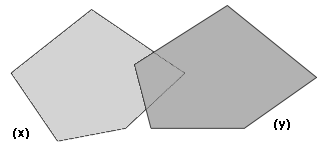

GIS 扩展
这个扩展将GIS（地理信息系统）支持加入NetLogo。它提供了加载矢量GIS数据（点，线和多边形）的能力，并且能栅格GIS数据（网格）进你的模型。
这个扩展以ESRI形状文件的形式支持矢量数据。形状文件（.shp）格式是最常见的存储和修改矢量GIS数据的形式。这个扩展以ESRI ASCII 网格文件的形式支持栅格文件。ASCII网格文件（.asc 或者.grd）并不如形状文件常见，但是被大多数GIS平台作为交互格式支持。
如何使用
总体来说，首先定义一个GIS数据空间和Netlogo空间之间的转换，然后加载数据集，并对其运行多种操作。最简单的在GIS空间和Netlogo空间之间定义转换的方法是取"envelopes"的并集或者约束所有GIS空间和Netlogo世界中边界的地图的范围。看GIS例子。
你也可以选择性的为GIS空间定义一个映射，这样，数据集会被反映射来匹配装载时的映射，只要你的每个描述映射或者地理协调系统的数据文件都与.prj文件有关联。如果没有找到关联的.prj文件，扩展就会假定数据集已经使用了当前的映射，无论当前映射是什么。
一旦协调系统被定义后，就可以使用
gis:load-dataset来加载数据集。这条源于返回一个矢量数据集或者是一个栅格数据集，取决于你传的文件类型。
一个矢量数据集包括一个矢量型的集合，每个矢量型都是点、线或者多边形，还有一组属性值。单个的矢量数据集可能只包含三种可能的型中的一种。
可以对矢量数据集做以下几件事：查询矢量型的属性的名称，查询它的"envelope"（边界矩形），查询数据集中所有的某个属性大于或小于固定值的矢量型的列表，或者列出给定范围，或者使用通配符匹配（"*"，匹配任何出现字符的数字）了来配对给定的字符串。如果矢量型是多边形，你也可以将数据集的型的特定属性的值赋给一块给定的变量。
也可以从矢量数据集中对矢量型做以下事情：查询顶点列表的列表，按照名称查询属性值，查询它的重心（重力的中心），和查询和给定的矢量型互动的给定主体集的子集。对于点数据来讲，每一个顶点列表都是一个元素的列表。对线数据来讲，每个顶点列表都会给出组成这个型的顶点。对多边形来说，每个顶点列表会给出一个多边形的环，而且第一个顶点和最后一个顶点是相同的。顶点列表是有顶点类型的值组成的，重心也是顶点类型的值。
对栅格性数据也有很多操作。大部分都和在数据集中取样或者重新取样有关。可以在给定瓦片变量上应用一个栅格数据，也可以用任意的卷积矩阵卷乘一个栅格数据。
Code Example: GIS General Examples has general examples of
how to use the extension
Code Example: GIS Gradient Example is a more advanced
example of raster dataset analysis.
已知问题
栅格数据集，矢量数据集，矢量型和顶点的值都不能用
export-world 和
import-world合适的处理。要保存书籍，必须使用
gis:store-dataset 原语。
当前不能区分活动区域
"shell"多边形与消极区域 "hole"多边形，也不能决定哪些holes和shells相关。
信用
GIS扩展的最初开发者是Eric Russell.
GIS 扩展利用了集中开源的软件数据库。版权和许可证信息看
copyright 。扩展也包括了从My World GIS借用来的元素。
这份文书和NetLogo模型例子在公共区域。GIS扩展本身时免费、开源的软件。见扩展路径下的
README.md 文件。
我们期待能够得到您关于如何提高GIS扩展的建议，或者仅仅是您使用它的用途。请将问题或建议贴在
NetLogo Users
Group，或者直接写信给 Eric Russell和 NetLogo 团队
ccl-gis@ccl.northwestern.edu.
GIS 原语
set-transformation set-transformation-ds set-world-envelope set-world-envelope-ds world-envelope envelope-of envelope-union-of load-coordinate-system set-coordinate-system
load-dataset store-dataset type-of patch-dataset turtle-dataset link-dataset
shape-type-of property-names feature-list-of vertex-lists-of centroid-of location-of property-value find-features find-one-feature find-less-than find-greater-than find-range property-minimum property-maximum apply-coverage
coverage-minimum-threshold
set-coverage-minimum-threshold
coverage-maximum-threshold
set-coverage-maximum-threshold
intersects? contains? contained-by? have-relationship? relationship-of
width-of height-of raster-value set-raster-value minimum-of maximum-of sampling-method-of set-sampling-method raster-sample raster-world-envelope create-raster resample convolve
apply-raster
drawing-color set-drawing-color draw fill paint
gis:set-transformation gis-envelope netlogo-envelope
定义了GIS和Netlogo协调之间的映像。
gis-envelope和 netlogo-envelope参数一定要由四部分组成：
[minimum-x maximum-x minimum-y maximum-y]
转换的范围必须要和使映像在x的值和y的值范围内的最小必须范围相等。
例如，以下两个列表会映射所有的地理空间（经度和纬度）到netlogo空间，不管当前netlogo世界的维度：
(list -180 180 -90 90)
(list min-pxcor max-pxcor min-pycor max-pycor)
然而，如果你在设定netlogo世界的envelope，你可能要用到下面的
set-world-envelope。
gis:set-transformation-ds gis-envelope
netlogo-envelope
除了允许在x值的范围内映像的范围不同于在y值的范围内映像的范围，set-transformation 和上面的做一样的事情。
最后的"-ds"表示"different scales"。使用不同的范围会导致GIS相撞的扭曲，所以一般不推荐，但是有的模型中它是有用的。
下面是一个
set-transformation和set-transformation-ds不同的例子：
gis:set-world-envelope gis-envelope
设定映射netlogo世界边界到给定的GIS世界的边界的转换，同时保持x和y轴的范围一样的一种缩写。它和以下的相同：
set-transformation gis-envelope (list min-pxcor max-pxcor min-pycor max-pycor)
这条原语设计是因为大多数时间都想设定整个netlogo世界的边界，而不仅仅是一部分。
gis:set-world-envelope-ds gis-envelope
设定映射netlogo世界边界到给定的GIS世界的边界的转换，使用x和y轴的范围不一样的一种缩写。它和以下的相同：
set-transformation-ds gis-envelope (list min-pxcor max-pxcor min-pycor max-pycor)
看上面的 pictures，可以找到使用相同的x，y和不同的x,y范围的差别。
gis:world-envelope
返回netlogo世界的envelope（边界矩形），转换为GIS空间。一个envelope包括四个元素：
[minimum-x maximum-x minimum-y maximum-y]
gis:envelope-of thing
返回GIS坐标中的thing的envelope（边界矩形）。thing可能是一个主题，主体集，栅格数据集或者是矢量数据集。一个envelope包括四个元素：
[minimum-x maximum-x minimum-y maximum-y]
gis:envelope-union-of envelope1 envelope2
(gis:envelope-union-of envelope1 ...)
返回包含全部给定envelopes的envelope（边界矩形）。一个envelope包括四个元素：
[minimum-x maximum-x minimum-y maximum-y]
对于坐标系统的争议不做假设，尽管他们不再同一个坐标系下，结果可能是不可预知的。
gis:load-coordinate-system file
载入一个新的全球映射，来映射或重新映射GIS数据，在其被从文件中导入后。文件必须包含一个可用的
Well-Known Text (WKT) 投影描述。
WKT 投影文件经常和GIS数据文件一同出现，而且经常有".prj"的文件扩展名.
相关的路径必须和当前模型的位置相关，或者如果当前模型还未被保存的话就是用户的主页路径。
GIS扩展不支持所有的WKT坐标系和项目。只有geographic ("GEOGCS") 和
projected ("PROJCS") 坐标系被支持。对于 projected 坐标系来说，只有
projections 能被支持：
|
Albers_Conic_Equal_Area
|
Lambert_Conformal_Conic_2SP
|
Polyconic
|
|
Lambert_Azimuthal_Equal_Area
|
Mercator_1SP
|
Robinson
|
|
Azimuthal_Equidistant
|
Miller
|
Stereographic
|
|
Cylindrical_Equal_Area
|
Oblique_Mercator
|
Transverse_Mercator
|
|
Equidistant_Conic
|
hotine_oblique_mercator
|
|
Gnomonic
|
Orthographic
|
见remotesensing.org
。
gis:set-coordinate-system system
设定全球映射或者在GIS数据被加载时，重新映射。
system 必须是一个
Well-Known Text (WKT) format里的字符串，或者包含WKT通过将关键字移入相关括号内并在周围加以引用而转换为列表的NetLogo 列表文件。后者更好，因为后者编码可读性更强。
上述的对WKT的限制也适用于：
load-coordinate-system
gis:load-dataset file
载入给定的数据文件，如果必要重新映射，如果一个定义了全球映射而且数据文件自身有关联的.prj文件，则返回结果数据集。
如果当前没有 ".prj" 文件，那么 load-dataset假设载入数据的映射和当前的全球坐标系一样。
相关的路径必须和当前模型的位置相关，或者如果当前模型还未被保存的话就是用户的主页路径。
目前，支持这两种数据文件：
- ".shp" (ESRI shapefile): 包含矢量数据，包括点，线或者多边形。当目标文件是形状文件时， load-dataset 返回一个矢量数据集。
- ".asc" 或者 ".grd" (ESRI ASCII
grid): 包含栅格数据，包括一网格的值。如果目标文件是一个ASCII网格文件， load-dataset
返回一个栅格数据集。
gis:store-dataset dataset file
在制定的文件中保存给定的数据集。如果文件的名字没有合适的文件扩展，扩展会自动在名字上添加。
相关的路径必须和当前模型的位置相关，或者如果当前模型还未被保存的话就是用户的主页路径。
目前，这条原语只适用于山歌文件，而且目前只能保存为ESRI ASCII网格文件的数据集。
gis:type-of dataset
返回给定GIS数据集的类型：
"VECTOR" 或者是"RASTER".
gis:patch-dataset patch-variable
返回一个新的栅格，栅格的元胞和netlogo的瓦片直接相关，而且元胞的值包括给定的瓦片变量。这条原语基本上是
apply-raster的反转; apply-raster从一个栅格数据集上复制值到瓦片变量上，这条原语将瓦片变量的值复制到栅格数据集中。
gis:turtle-dataset turtle-set
返回一个新的，点的矢量数据集，由给定的主题集合的乌龟构成。点分布在乌龟的位置上，利用当前的坐标转换从netlogo空间转换为GIS空间。而且数据集的属性包括所有乌龟的变量。
gis:link-dataset link-set
返回一个新的，线的矢量数据集，由给定主题集合的链接组成。每条线的结尾点处在链接的乌龟的位置，利用当前坐标将netlogo空间转换为GIS空间。而且数据集的属性包括所有的连接变量。
gis:shape-type-of VectorDataset
返回给定数据集的形状类型。可能的输出值为
"POINT", "LINE", 和
"POLYGON".
gis:property-names VectorDataset
返回一个字符串的列表，每个字符串都是给定矢量数据集中一个矢量型的属性的名字，适合于在
gis:property-value中使用。
gis:feature-list-of VectorDataset
返回一个给定数据集的所有的矢量型的列表。
gis:vertex-lists-of VectorFeature
返回一个顶点值的列表的列表。对点数据集来说，每个顶点列表只包含一个顶点值：点的位置。对线数据集来说每个顶点列表包括至少两个点，而且会展示一个多叉线，连接每对列表中的顶点。对多边形数据集来说，每个顶点列表包括最少三个点，展示了一个多边形连接每个顶点，而且第一个和最后一个顶点是相同的。
gis:centroid-of VectorFeature
返回一个单独的顶点，表示给定型的重心（重力的中心）。对点数据集来说，重心就是所有点的平均位置。对线数据集来说，重心就是所有线的中点的平均位置，以线段的长度作为比重。对多边形数据集来说，重心就是所有组成部分的重心的权重平均。
见 this FAQ
。
gis:location-of Vertex
返回一个两个元素的列表，包括利用当前变换的netlogo世界空间给定的顶点x,y的值（按照这个顺序）或者是空的列表，如果给定的顶点在netlogo世界之外。。
gis:property-value VectorFeature property-name
返回给定矢量数据集，给定名称的属性的值。返回的值可能是一个数字、字符串或者布尔变量，取决于访问的值域。
对形状文件来说，从
dBase CHARACTER 和
DATE 区域来的值都返回字符串，从
NUMBER 和FLOAT 区域来的值都返回数字，
从LOGICAL区域中来的值都返回布尔值。 MEMO 区域不支持。 DATE得知利用
ISO 8601 格式转换为字符串。
(YYYY-MM-DD).
gis:find-features VectorDataset property-name
string
返回所有在给定的数据集中， property-name属性的值和给定的字符串匹配的矢量型的列表。
值的比较和例子相关性不大，而且通配符文字
"*"会匹配所有出现的数字（包括0）或文字。
gis:find-one-feature VectorDataset property-name
string
返回在数据集中，property-name属性的值和给定的字符串匹配的第一个出现的矢量型。
值的比较和例子相关性不大，而且通配符文字
"*"会匹配所有出现的数字（包括0）或文字。型按照数据集的源数据文件中出现的顺序查找，而且一旦匹配成功就停止查找。如果没有匹配就返回
nobody 。
gis:find-less-than VectorDataset property-name
value
返回在数据集中，property-name属性的值比给定的value小的所有矢量型。字符串的值利用
在
Java Documentation中定义的case-sensitive
lexicographic 规则比较。在数值化的属性中使用字符串或者在字符串化的属性中使用数字都会被认为是错误。
gis:find-greater-than VectorDataset property-name
value
返回在数据集中，property-name属性的值比给定的value大的所有矢量型。字符串的值利用
在
Java Documentation中定义的case-sensitive
lexicographic 规则比较。在数值化的属性中使用字符串或者在字符串化的属性中使用数字都会被认为是错误。
gis:find-range VectorDataset property-name
minimum-value maximum-value
返回在数据集中，property-name属性的值比给定的minimum-value严格大而比maximum-value严格小的的所有矢量型。字符串的值利用
在
Java Documentation中定义的case-sensitive
lexicographic 规则比较。在数值化的属性中使用字符串或者在字符串化的属性中使用数字都会被认为是错误。
gis:property-minimum VectorDataset property-name
返回给定数据集中所有矢量型的给定属性中的最小值。
字符串的值利用
在
Java Documentation中定义的case-sensitive
lexicographic 规则比较。
gis:property-maximum VectorDataset property-name
返回给定数据集中所有矢量型的给定属性中的最大值。
字符串的值利用
在
Java Documentation中定义的case-sensitive
lexicographic 规则比较。
gis:apply-coverage VectorDataset property-name
patch-variable
从矢量数据集的型中复制给定的属性的值到给定的瓦片变量中。数据集必须要是一个
多边形 数据集；点和线的都不支持。
对每个瓦片来说，它找到所有和瓦片交互的矢量型。那么，如果这个属性是个字符串属性，它通过计算被矢量型覆盖的瓦片总区域的属性有的可能值来计算主要的值。接着，返回代表瓦片区域的最大比例的值。如果属性是个数字型的属性，它计算所有和瓦片交互的矢量型的属性的加权平均值，权重是它们覆盖的瓦片的比例。
对这种默认的行为有两种期待：
-
如果瓦片的区域百分比比被一个矢量型覆盖的最大覆盖要大，那么那个矢量型的属性值就直接被复制过来。如果有多于一个矢量型覆盖的区域比开端大，只有第一个被使用。
- 如果瓦片面积被矢量型覆盖的总百分比少于最少覆盖开端，目标瓦片变量就被设定为不是一个数字。
默认情况下，最小的界限是10%，最大的界限是33%。使用如下四个原语可以修改这些值。
gis:coverage-minimum-threshold
返回当前覆盖的最小界限，使用
gis:apply-coverage.
gis:set-coverage-minimum-threshold new-threshold
设定当前覆盖最小界限，使用
S gis:apply-coverage.
gis:coverage-maximum-threshold
返回当前覆盖最大范围使用
gis:apply-coverage.
gis:set-coverage-maximum-threshold new-threshold
设定当前覆盖最大范围，使用
gis:apply-coverage.
gis:intersects? x y
如果给定的物体的特殊显示最少共用一个点，就返回true，否则返回false。这些物体的x和y可以是
- 矢量数据集，这样物体的特殊显示就是数据集包括的所有点、线、多边形的集合。
- 矢量型，这样，物体的特殊显示就被定义为矢量型有的点、线或多边形。
- 乌龟，这样特殊显示就是一个点。
- 连接，特殊显示是一条连接两端乌龟之间的线段。
- 瓦片，特殊显示是长方形的多边形。
- 主体集合，特殊显示是所有包含主体的显示的集合。
- 包含所有列出的元素的列表，包括另一个列表。特殊显示是内容的特殊显示的列表。
gis:contains? x y
如果每个y的特殊显示的点都是x的特殊显示的一部分的话返回true。注意，这表示多边形要包含边界。x和y可以是
- 矢量数据集，这样物体的特殊显示就是数据集包括的所有点、线、多边形的集合。
- 矢量型，这样，物体的特殊显示就被定义为矢量型有的点、线或多边形。
- 乌龟，这样特殊显示就是一个点。
- 连接，特殊显示是一条连接两端乌龟之间的线段。
- 瓦片，特殊显示是长方形的多边形。
- 主体集合，特殊显示是所有包含主体的显示的集合。
- 包含所有列出的元素的列表，包括另一个列表。特殊显示是内容的特殊显示的列表。
gis:contained-by? x y
如果每个x的特殊显示的点都是y的特殊显示的一部分的话返回true。注意，这表示多边形要包含边界。x和y可以是
- 矢量数据集，这样物体的特殊显示就是数据集包括的所有点、线、多边形的集合。
- 矢量型，这样，物体的特殊显示就被定义为矢量型有的点、线或多边形。
- 乌龟，这样特殊显示就是一个点。
- 连接，特殊显示是一条连接两端乌龟之间的线段。
- 瓦片，特殊显示是长方形的多边形。
- 主体集合，特殊显示是所有包含主体的显示的集合。
- 包含所有列出的元素的列表，包括另一个列表。特殊显示是内容的特殊显示的列表。
gis:have-relationship? x y relationship
如果两个物体的特殊显示具有给定的特殊关系的话就返回true，否则返回false。特殊关系有Dimensionally Extended Nine-
Intersection Model (DE-9IM)矩阵定义。这个矩阵包含9个元素，每个都确定了给定两个物体之间的关系。这些元素鼻血有六个可能的值之一：
- "T",表示空间必须某种程度上有交集
- "F",表示空间必须某种程度上没有交集
- "0", 表示空间的交集的维度必须为0（也就是说，必须是一个点或者非空的点集）
- "1", 表示空间交集的维度必须为1（也就是说必须是线或者非空的线集）
- "2", 表示空间交集的维度必须为2（也就是说，必须是多边形或者非空的多边形集合）
- "*", 表示两个空间可能有什么关系
例如矩阵：
|
|
x
|
|
Interior
|
Boundary
|
Exterior
|
|
y
|
Interior
|
T
|
*
|
*
|
|
Boundary
|
*
|
*
|
*
|
|
Exterior
|
F
|
F
|
*
|
当且仅当物体x的内部的一部分在物体y的内部，而且没有x的内部或者边界与y的外部有交集就返回true。这是一个更加约束的contains?原语的形式；而且其中，多边形不包括边界。
矩阵作为一个字符串被给
have-relationship?，它的元素按照下列方式给出：
如果你要使用上述的矩阵，你需要写：
S
gis:have-relationship? x y "T*****FF*"
一个更加详细规范的对DE-9IM矩阵的描述和相关的点集理论可以见
OpenGIS Simple
Features Specification for SQL.
物体 x 和 y 可以是：
- 矢量数据集，这样物体的特殊显示就是数据集包括的所有点、线、多边形的集合。
- 矢量型，这样，物体的特殊显示就被定义为矢量型有的点、线或多边形。
- 乌龟，这样特殊显示就是一个点。
- 连接，特殊显示是一条连接两端乌龟之间的线段。
- 瓦片，特殊显示是长方形的多边形。
- 主体集合，特殊显示是所有包含主体的显示的集合。
- 包含所有列出的元素的列表，包括另一个列表。特殊显示是内容的特殊显示的列表。
gis:relationship-of x y
返回Dimensionally Extended Nine-Intersection Model
(DE-9IM)矩阵，描述两个物体之间的特殊关系。矩阵包括9个元素，每个都描述两个物体之间的内部、边界和外部空间的关系。每个元素都会描述两个空间的交集的围堵，表示它可能有以下四个可能值之一：
- "-1", 表示空间没有交集
- "0", 表示空间的交集的维度必须为0（也就是说，必须是一个点或者非空的点集）
- "1",表示空间交集的维度必须为1（也就是说必须是线或者非空的线集）
- "2", 表示空间交集的维度必须为2（也就是说，必须是多边形或者非空的多边形集合）
例如，两个多边形x 和 y :

have the following DE-9IM matrix:
|
|
x
|
|
Interior
|
Boundary
|
Exterior
|
|
y
|
Interior
|
2
|
1
|
2
|
|
Boundary
|
1
|
0
|
1
|
|
Exterior
|
2
|
1
|
2
|
会被
relationship-of原语作为 字符串"212101212"返回.
更加详细规范的关于DE-9IM矩阵的描述见
OpenGIS Simple
Features Specification for SQL.
物体 x 和 y 可能是：
- 矢量数据集，这样物体的特殊显示就是数据集包括的所有点、线、多边形的集合。
- 矢量型，这样，物体的特殊显示就被定义为矢量型有的点、线或多边形。
- 乌龟，这样特殊显示就是一个点。
- 连接，特殊显示是一条连接两端乌龟之间的线段。
- 瓦片，特殊显示是长方形的多边形。
- 主体集合，特殊显示是所有包含主体的显示的集合。
- 包含所有列出的元素的列表，包括另一个列表。特殊显示是内容的特殊显示的列表。
patch-set gis:intersecting data
返回一个新的主体集只包括给定的与给出的 GIS data有交集的主体集，可能是，矢量数据集，矢量型，主体，主体集，或者是包含所有的列表。
gis:width-of RasterDataset
返回数据集的列数。注意，这是从做到有的元胞数，不是数据集在GIS空间的宽度。
gis:height-of RasterDataset
返回数据接的行数。注意是从头到尾的元胞数，不是GIS空间中数据集的高度。
gis:raster-value RasterDataset x y
返回给定的栅格数据集在给定的元胞中的值。元胞坐标从左向右，从上到下从零开始编号。所以左边最上面的元胞是（0,0），而且右下角的元胞坐标是(gis:width-of dataset - 1,
gis:height-of dataset - 1).
gis:set-raster-value RasterDataset x y
value
设定在给定元胞中给定的栅格数据一个新的值。元胞坐标从左向右，从上到下从零开始编号。所以左边最上面的元胞是（0,0），而且右下角的元胞坐标是(gis:width-of dataset - 1,
gis:height-of dataset - 1).
gis:minimum-of RasterDataset
返回给定栅格数据集的最大值。
gis:maximum-of RasterDataset
返回给定栅格数据集的最小值。
gis:sampling-method-of RasterDataset
返回计算在一个点上或者在一个区域上小于一个栅格数据的给定栅格数据的值的抽样方法。抽样利用GIS扩展原语
raster-sample, resample, convolve,
and apply-raster.抽样方法是以下方法中一种：
-
"NEAREST_NEIGHBOR":使用与抽样距离最近的元胞的值。
-
"BILINEAR": 根据周围四个最近元胞与其相近程度，线性加权抽样。
-
"BICUBIC": 最近的16个元胞被抽样，它们的值按照Rifman推荐的 piecewise cubic polynomial 抽样。
(见 Digital Image Warping, George Wolberg, 1990, pp
129-131, IEEE Computer Society Press).
-
"BICUBIC_2": 和上面的BICUBIC使用相同的过程和相同的polynomial
，只是使用一种不同的参数。这种方法可能会产生比BICUBIC更尖锐的数据，但是结果是数据依赖的。
更多信息，见this wikipedia
article.
gis:set-sampling-method RasterDataset sampling-method
返回计算在一个点上或者在一个区域上小于一个栅格数据的给定栅格数据的值的抽样方法。抽样利用GIS扩展原语 raster-sample, resample, convolve,
and apply-raster. 抽样方法是以下方法中一种：
-
"NEAREST_NEIGHBOR"
-
"BILINEAR"
-
"BICUBIC"
-
"BICUBIC_2"
更多详细信息见sampling-method-of
gis:raster-sample RasterDataset sample-location
返回个顶位置的给定栅格的值。位置可能是以下几种之一：
- 长度为2的列表，用来表示netlogo空间中的一点([xcor ycor])利用location-of 返回。栅格数据集在位置的点上被抽样。
- 长度为4的列表，用来表示GIS空间中的边界，利用envelope-of得到。栅格数据集在边界范围内得到。
- 瓦片，栅格数据集在瓦片的区域被抽样。
- 乌龟，栅格数据集在乌龟所处的位置被抽样。
- 顶点，栅格数据集在顶点的位置被抽样。
如果需要的位置在栅格数据集覆盖的区域外，这条源于返回一个特殊的值表明"not a number"，被netlogo显示为"NaN"。使用特殊"not a number"的值作为原语的结果来期望得到一个数字可能会导致错误，但是可以检验原语返回的是不是"not a number"值。不是数字的值既不会大于一个数也不会小于一个数，所以可以利用下列方法检测这个值：
let value gis:raster-sample dataset turtle 0
; set color to blue if value is a number, red if value is "not a number"
ifelse (value <= 0) or (value >= 0)
[ set color blue ]
[ set color red ]
如果需要的位置是一个点，例子总是能够利用set-sampling-method设定的方法得到。
如果需要的位置是一个区域，（也就是说一个限制或者瓦片）那么久用所有被要求的区域覆盖的栅格元胞来计算平均值。
gis:raster-world-envelope RasterDataset x y
返回需要通过给定栅格数据集中的元胞边界来匹配netlogo瓦片边界的GIS范围。这个范围可以由
set-transformation-ds得到。
数据集中的元胞可能比netlogo世界中的瓦片还多。这种情况下，你需要通过限制想要和netlogo世界左上角匹配的元胞来选择一个数据集中的元胞的子集。元胞从左向右，从上向下从零开始编号。所以左上角是（0,0），右下角是(gis:width-of dataset - 1,
gis:height-of dataset - 1).
gis:create-raster width height envelope
创造并返回一个新的空的栅格数据集，给定行数和列数，给定覆盖的范围。
gis:resample RasterDataset envelope width
height
返回一个新的数据集，包括给定的再抽样以覆盖给定区域，包含给定行数和列数的栅格数据集。如果新的栅格元胞比存在的栅格元胞要小，它们会利用
set-sampling-method方法重新抽样.如果新的元胞你初始元胞大，会使用"NEAREST_NEIGHBOR" 方法再抽样。
gis:convolve RasterDataset kernel-rows
kernel-columns kernel key-column
key-row
返回一个新的栅格，栅格的数据包括被给定的核心卷乘的给定的栅格。
卷积是一种特殊的数学运算，它运算每个输出的元胞，将一个特殊的源元胞周围的元胞值和核心的元素相乘。核心是矩阵的值，是一个定义为"key
element"的值，这个值作为中心，源元胞围绕着它。
核心矩阵的值以列表的方式给出，枚举了矩阵从左向右，从上向下的所有元素。所以一个三乘三的矩阵可以按照下列规则被列为：
关键元素被矩阵中的行和列限定。列从左向右编号，从零开始。行从上向下编号，也是从零开始，所以，例如，
Sobel operator的核心，就应该看起来是：
|
1
|
0
|
-1
|
|
2
|
0
(key)
|
-2
|
|
1
|
0
|
-1
|
按照下列方式被指定：
let horizontal-gradient gis:convolve dataset 3 3 [1 0 -1 2 0 -2 1 0 -1] 1 1
gis:apply-raster RasterDataset patch-variable
从给定的栅格数据集中复制数据到给定的瓦片变量，必要时重新抽取栅格数据，以保证它的元胞边界和netlogo瓦片边界匹配。这种重新抽样使用resample而不是raster-sample，从效率的角度出发。然而，没有被栅格覆盖的瓦片被记录为"not a number"，方法和raster-sample从栅格外部返回位置的值一样。
gis:drawing-color
返回GIS扩展使用的颜色来将栅格图像画在netlogo画图框中。颜色可以使用netlogo颜色（从0-140之间的一个数）或者是RGB（三个数字的一个列表）。详见
Colors 。
gis:set-drawing-color color
返回GIS扩展使用的颜色来将矢量图像画在netlogo画图框中。颜色可以使用netlogo颜色（从0-140之间的一个数）或者是RGB（三个数字的一个列表）。详见
Colors 。
gis:draw vector-data line-thickness
在netlogo画图框中画出给定的矢量数据，使用当前的GIS画图颜色，给定画笔粗细。数据要么包括全部的矢量数据集，要么是单个的矢量型。这条原语之花多边形数据的边界，对点来说，它将半径为线的粗细的圆填充。
gis:fill vector-data line-thickness
在netlogo画图框中，利用当前的GIS颜色，给定边界线的粗细，填充给定的矢量数据。
数据要么包括全部的矢量数据集，要么是单个的矢量型。这条原语之花多边形数据的边界，对点来说，它将半径为线的粗细的圆填充。
gis:paint RasterDataset transparency
在netlogo画图框中画出给定的栅格数据。数据集中的最大值涂为白色，最小值为黑色，其他值在白色和黑色中间线性涂为灰度。
透明度 输入决定了画出的图形有多透明。有效值从0（完全不透明）到255（完全透明）。
gis:import-wms-drawing server-url spatial-reference
layers transparency
将图像导入netlogo画图框
，使用 Web Mapping
Service 正如在 Open Geospatial Consortium中定义的.
spatial reference 和layers 输入应该给字符串。
spatial reference 输入和SRS 参数 和 GetMap 要求相关，正如在in
section 7.2.3.5 of version 1.1.1 of the WMS standard中定义的.
layers输入和 LAYERS参数相关，正如在
7.2.3.3 of version 1.1.1 of the WMS standard中定义的。
可以找到有效的空间索引代码和涂层名字的列表，通过检验WMS服务器对GetCapabilities要求的回复。
得到相关对GetCapabilities 要求的指令的标准，和怎样分析结论。
透明度 输入决定了画出的图形有多透明。有效值从0（完全不透明）到255（完全透明）。